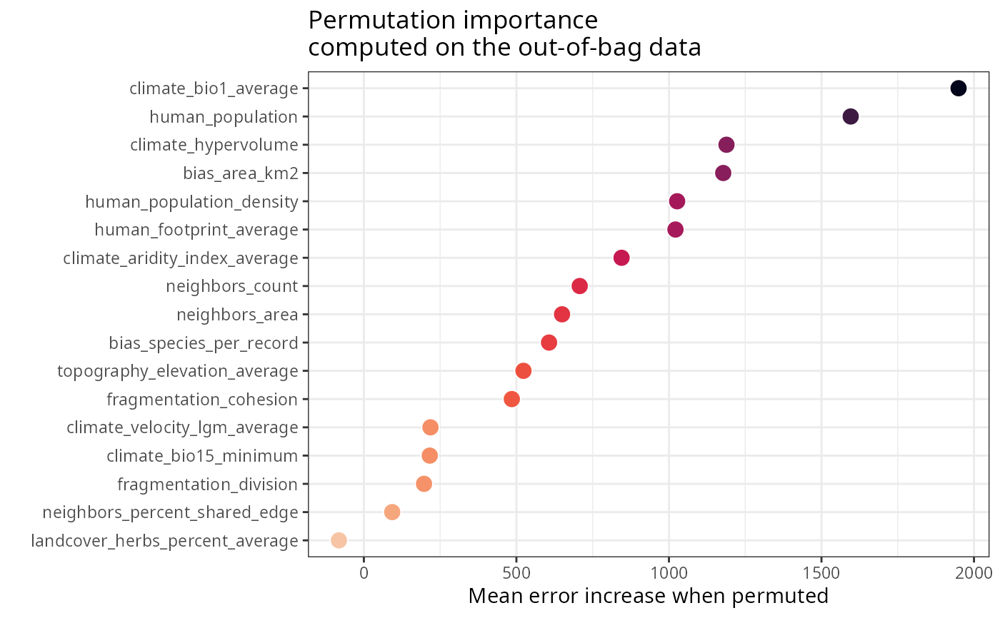
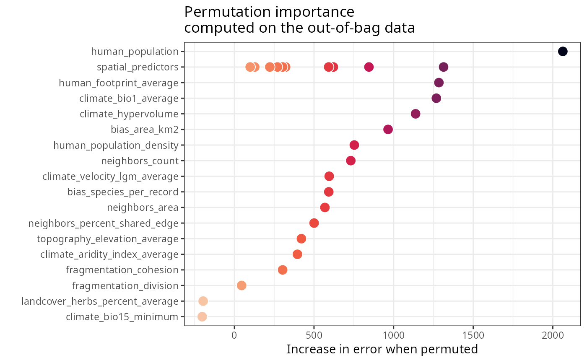
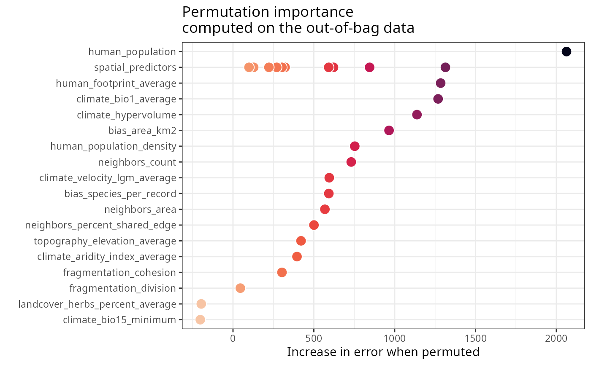
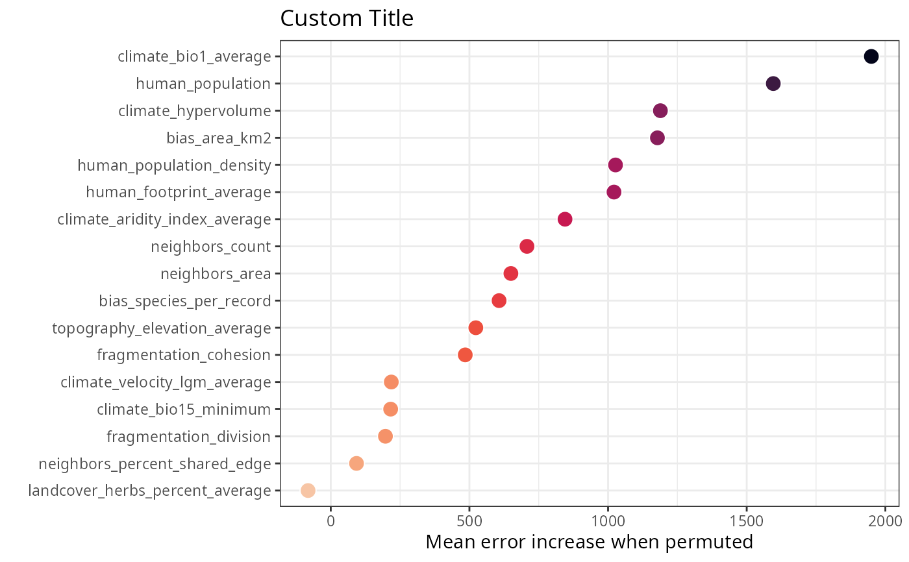
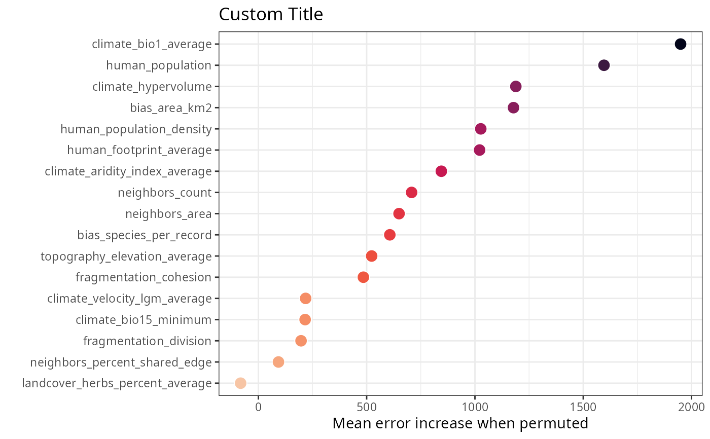

Creates a visualization of variable importance scores from models fitted with rf(), rf_repeat(), or rf_spatial(). For single-run models (rf(), rf_spatial()), displays points ordered by importance. For repeated models (rf_repeat()), displays violin plots showing the distribution of importance scores across model repetitions.
Usage
plot_importance(
model,
fill.color = viridis::viridis(100, option = "F", direction = -1, alpha = 1, end = 0.9),
line.color = "white",
verbose = TRUE
)Arguments
- model
Model fitted with
rf(),rf_repeat(), orrf_spatial(). Alternatively, a data frame with variable importance scores (for internal use only).- fill.color
Character vector of colors or a function generating a color palette. Accepts hexadecimal codes (e.g.,
c("#440154FF", "#21908CFF", "#FDE725FF")) or palette functions (e.g.,viridis::viridis(100)). For single-run models, creates a continuous gradient. For repeated models, assigns discrete colors to variables. Default:viridis::viridis(100, option = "F", direction = -1, alpha = 1, end = 0.9).- line.color
Character string specifying the color of point borders (single-run models) or violin plot outlines (repeated models). Default:
"white".- verbose
Logical. If
TRUE, prints the plot to the graphics device. Default:TRUE.
Value
ggplot object that can be further customized or saved. The plot displays variable importance on the x-axis and variable names on the y-axis, ordered by importance (highest at top).
Details
This function creates different visualizations depending on the model type:
Single-run models (rf(), rf_spatial() without repetitions):
Displays points showing the importance value for each variable
Variables ordered top-to-bottom by importance (most important at top)
Point color represents importance magnitude using a continuous gradient
Repeated models (rf_repeat(), rf_spatial() with repetitions):
Displays violin plots showing the distribution of importance across repetitions
Variables ordered top-to-bottom by median importance (most important at top)
The median line within each violin shows the center of the distribution
Width of violin reflects the density of importance values at each level
Each variable receives a distinct fill color
Importance metric:
The x-axis shows permutation importance, which measures the increase in prediction error when a variable's values are randomly shuffled. Higher values indicate more important variables. Importance is computed on out-of-bag (OOB) samples, providing an unbiased estimate of variable contribution.
Spatial predictors:
In rf_spatial() models, all spatial predictors (MEMs or PCA factors) are grouped into a single category labeled "spatial_predictors" to simplify comparison with non-spatial predictors.
Note on violin plots:
Violin plots display kernel density estimates. The median line shown is the median of the density estimate, which may differ slightly from the actual data median. However, variables are always ordered by the true median importance to ensure accurate ranking.
Cross-validated importance:
This function does not plot results from rf_importance(). For cross-validated importance plots, access model$importance$cv.per.variable.plot after running rf_importance().
See also
print_importance(), get_importance(), rf_importance()
Other visualization:
plot_evaluation(),
plot_moran(),
plot_optimization(),
plot_residuals_diagnostics(),
plot_response_curves(),
plot_response_surface(),
plot_training_df(),
plot_training_df_moran(),
plot_tuning()
Examples
data(plants_rf, plants_rf_repeat, plants_rf_spatial)
#> Warning: data set ‘plants_rf_repeat’ not found
# Plot importance from single Random Forest model
plot_importance(plants_rf)


# Plot importance from repeated Random Forest model (shows distributions)
plot_importance(plants_rf_repeat)
#> Error: object 'plants_rf_repeat' not found
# Plot importance from spatial Random Forest model
plot_importance(plants_rf_spatial)

 # Custom colors for repeated model
plot_importance(
plants_rf_repeat,
fill.color = viridis::viridis(20, option = "D")
)
#> Error: object 'plants_rf_repeat' not found
# Return plot object for further customization
p <- plot_importance(plants_rf, verbose = FALSE)
p + ggplot2::ggtitle("Custom Title")

# Print importance values
print_importance(plants_rf)
#> ┌─────────────────────────────────┬────────────┐
#> │ Variable │ Importance │
#> ├─────────────────────────────────┼────────────┤
#> │ climate_bio1_average │ 1949.457 │
#> ├─────────────────────────────────┼────────────┤
#> │ human_population │ 1595.806 │
#> ├─────────────────────────────────┼────────────┤
#> │ climate_hypervolume │ 1188.702 │
#> ├─────────────────────────────────┼────────────┤
#> │ bias_area_km2 │ 1177.989 │
#> ├─────────────────────────────────┼────────────┤
#> │ human_population_density │ 1026.905 │
#> ├─────────────────────────────────┼────────────┤
#> │ human_footprint_average │ 1021.417 │
#> ├─────────────────────────────────┼────────────┤
#> │ climate_aridity_index_average │ 844.765 │
#> ├─────────────────────────────────┼────────────┤
#> │ neighbors_count │ 707.572 │
#> ├─────────────────────────────────┼────────────┤
#> │ neighbors_area │ 649.625 │
#> ├─────────────────────────────────┼────────────┤
#> │ bias_species_per_record │ 607.005 │
#> ├─────────────────────────────────┼────────────┤
#> │ topography_elevation_average │ 523.113 │
#> ├─────────────────────────────────┼────────────┤
#> │ fragmentation_cohesion │ 484.973 │
#> ├─────────────────────────────────┼────────────┤
#> │ climate_velocity_lgm_average │ 218.293 │
#> ├─────────────────────────────────┼────────────┤
#> │ climate_bio15_minimum │ 215.974 │
#> ├─────────────────────────────────┼────────────┤
#> │ fragmentation_division │ 197.148 │
#> ├─────────────────────────────────┼────────────┤
#> │ neighbors_percent_shared_edge │ 92.874 │
#> ├─────────────────────────────────┼────────────┤
#> │ landcover_herbs_percent_average │ -81.849 │
#> └─────────────────────────────────┴────────────┘
# Extract importance data for custom analysis
importance_data <- get_importance(plants_rf)
head(importance_data)
#> variable importance
#> 1 climate_bio1_average 1949.457
#> 2 human_population 1595.806
#> 3 climate_hypervolume 1188.702
#> 4 bias_area_km2 1177.989
#> 5 human_population_density 1026.905
#> 6 human_footprint_average 1021.417
# Custom colors for repeated model
plot_importance(
plants_rf_repeat,
fill.color = viridis::viridis(20, option = "D")
)
#> Error: object 'plants_rf_repeat' not found
# Return plot object for further customization
p <- plot_importance(plants_rf, verbose = FALSE)
p + ggplot2::ggtitle("Custom Title")

# Print importance values
print_importance(plants_rf)
#> ┌─────────────────────────────────┬────────────┐
#> │ Variable │ Importance │
#> ├─────────────────────────────────┼────────────┤
#> │ climate_bio1_average │ 1949.457 │
#> ├─────────────────────────────────┼────────────┤
#> │ human_population │ 1595.806 │
#> ├─────────────────────────────────┼────────────┤
#> │ climate_hypervolume │ 1188.702 │
#> ├─────────────────────────────────┼────────────┤
#> │ bias_area_km2 │ 1177.989 │
#> ├─────────────────────────────────┼────────────┤
#> │ human_population_density │ 1026.905 │
#> ├─────────────────────────────────┼────────────┤
#> │ human_footprint_average │ 1021.417 │
#> ├─────────────────────────────────┼────────────┤
#> │ climate_aridity_index_average │ 844.765 │
#> ├─────────────────────────────────┼────────────┤
#> │ neighbors_count │ 707.572 │
#> ├─────────────────────────────────┼────────────┤
#> │ neighbors_area │ 649.625 │
#> ├─────────────────────────────────┼────────────┤
#> │ bias_species_per_record │ 607.005 │
#> ├─────────────────────────────────┼────────────┤
#> │ topography_elevation_average │ 523.113 │
#> ├─────────────────────────────────┼────────────┤
#> │ fragmentation_cohesion │ 484.973 │
#> ├─────────────────────────────────┼────────────┤
#> │ climate_velocity_lgm_average │ 218.293 │
#> ├─────────────────────────────────┼────────────┤
#> │ climate_bio15_minimum │ 215.974 │
#> ├─────────────────────────────────┼────────────┤
#> │ fragmentation_division │ 197.148 │
#> ├─────────────────────────────────┼────────────┤
#> │ neighbors_percent_shared_edge │ 92.874 │
#> ├─────────────────────────────────┼────────────┤
#> │ landcover_herbs_percent_average │ -81.849 │
#> └─────────────────────────────────┴────────────┘
# Extract importance data for custom analysis
importance_data <- get_importance(plants_rf)
head(importance_data)
#> variable importance
#> 1 climate_bio1_average 1949.457
#> 2 human_population 1595.806
#> 3 climate_hypervolume 1188.702
#> 4 bias_area_km2 1177.989
#> 5 human_population_density 1026.905
#> 6 human_footprint_average 1021.417